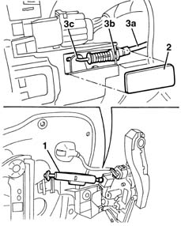
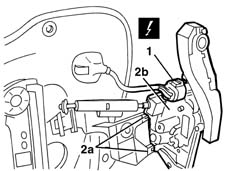

7005N20 front side door lock motor/catch assembly - rr with door panel and support frame removed
- Path
- Procedures > 70 FITTINGS > 7005 PASSENGER COMPARTMENT FRONT SIDE DOORS > 7005N front door central locking system > 7005N20 front side door lock motor/catch assembly - rr with door panel and support frame removed
- Kind
- repair procedure (removal / refitting; the operation number is the code)
- Applies to
- all engines; all production periods
- Interactive page
- https://sloeber94.github.io/elrnDB-lYpsln/en/#/2429517
Applies to: all engines; all production periods
 Removing
Removing
 Refitting
Refitting1. Release and open the anti-break in protection.
2. Remove the lock retainer access cover.
3. Release the idler device (3a) from the lock retainers (3b) and (3c).

Applies to: all engines; all production periods
1. Disconnect the electrical connection for the loc,
 | Name | Connector |
|---|---|---|
1 | Front driver's door lock geared motor. |
| Name | Connector |
|---|---|---|
1 | Front passenger door lock geared motor |
2. Release the retainers (2a) and remove the lock (2b).

Applies to: all engines; all production periods
Refitting
RemovingCheck that the lock motor assembly is not damaged.
Position the lock fitting the retainers.
Connect the electrical connection.
Position the idler device and attach it to the lock retainers.
Fit the cover.
Position the anti-break in protection correctly.